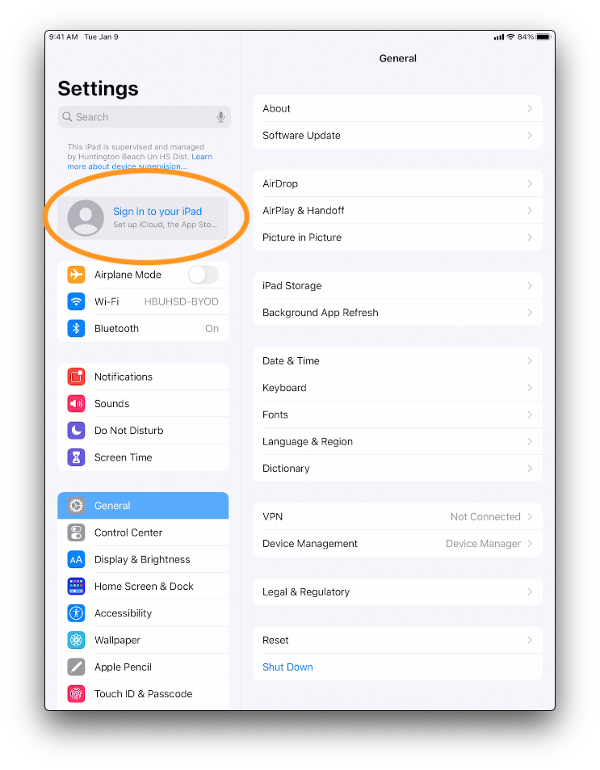
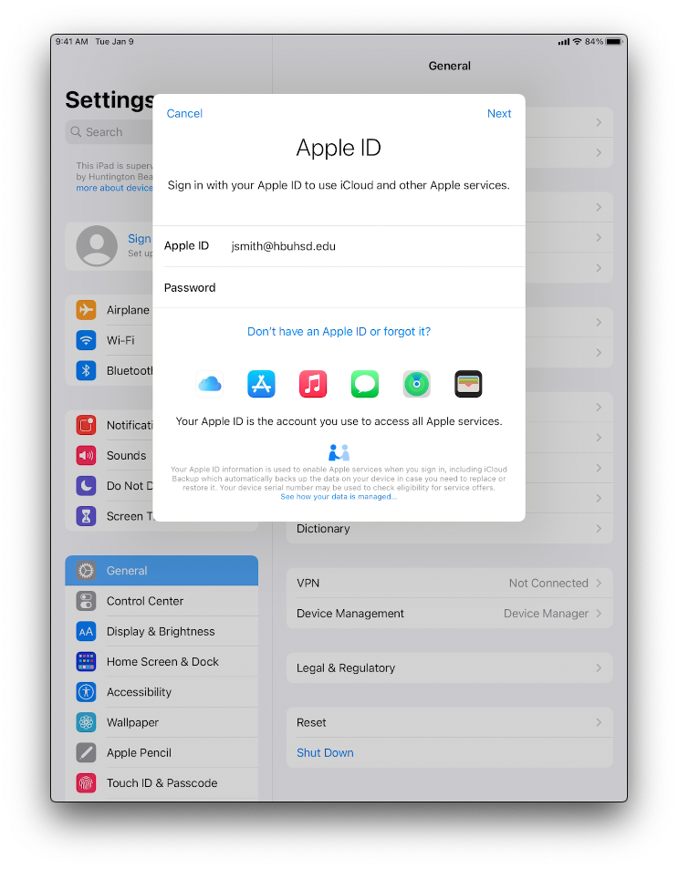
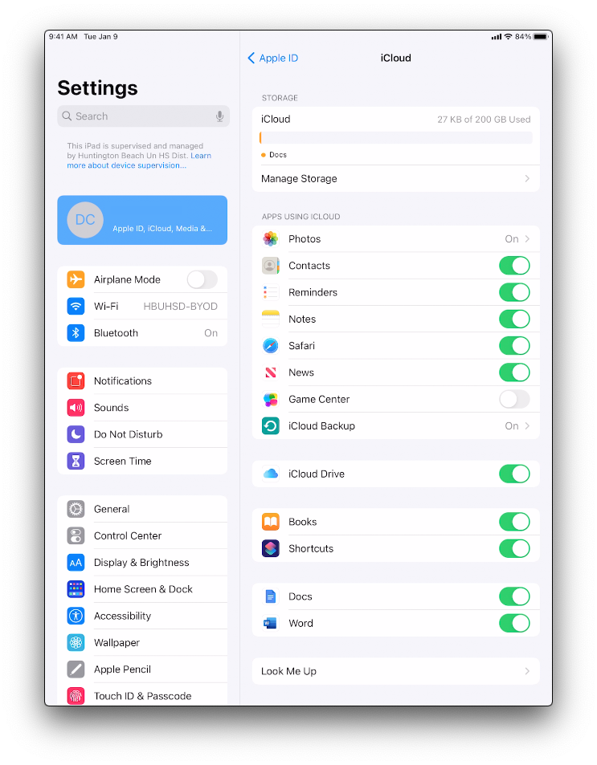

Managed Apple IDs Now Available for Teachers/Staff
Hello Teachers/Staff of HBUHSD,
I'm excited to share the news that our new managed Apple IDs are now available to all Teachers/Staff. You should now be able to sign in to iCloud on your Mac or iPad devices.
What Are Apple IDs?
Apple IDs are the accounts made with Apple that allow you to interact with Apple's services, such as iCloud (for backup and syncing, App Store, Apple Music, and more.
Why Are We Managing Apple IDs now?
Managed Apple IDs are a new feature provided by Apple to educational institutions, and provide the following critical benefits:
-
200 GB of free iCloud storage for everyone (meaning you can keep your entire device backed up automatically at no charge to you or the district)
-
Restricted access to non-academic services, such as Facetime and Messages
Are There Limitations to the Managed Apple IDs?
Yes. Managed Apple IDs cannot be used to download apps or purchase content from the iTunes store, or subscribe to Apple Music. It also restricts access to Facetime, Messages, and other applications that are not appropriate for a school environment.
What about my personal AppleID?
This change will have no effects on your personal devices/AppleIDs. You can continue using those as normal.
What if I already created a personal Apple ID with my hbuhsd.edu email address?
If you already have a personal Apple ID that you created using your HBUHSD email account, you should have an email by Apple to provide a new email address to associate with your personal Apple ID content. Something that has come up alot is if you created an AppleID with a older email due to a name change. If you don't have any data that you need from there, you can go ahead and start fresh.
Not sure if you already created an account? ...If you don't get an email from Apple -- no action is needed!
The whole process is outlined here.
If you need to associate your account with another email address, here are some tips to help you through this process:
If you get an email from Apple, read and follow the instructions carefully
-
Act now! If you don't take action to re-associate your Apple ID with another email address, you cannot use your new managed Apple ID until you take the necessary steps, or for 60 days if no action is taken.
-
Choose a different email address that is not already associated with an Apple ID -- you can always create a new personal gmail account to use for this process.
How Do I Sign In?
Your Microsoft HBUHSD credentials should allow you to sign in. Use your normal email address, and the same password you use to login to your Windows computer. This might be a separate credential from your Google Credentials. If you do not use a Windows computer or do not know your Windows Credentials, please contact ishelp@hbuhsd.edu or #52 from your phone to get a password reset.
Should I Really Bother?
Yes! Please take advantage of this opportunity to keep your device backed up. In the event that we need to switch out your device, like in the case of a technical failure or damage, you will be able to easily recover your data. As always, you should expect anything that isn't backed up to have the possibility of disappearing at a moment's notice. This takes all the effort out of backing up.
You are also welcome to use your managed Apple ID to back up data on your personal Apple devices, but be advised that it will sync data between all your signed-in devices, and it will still have the limitations mentioned above.
How Do I Do It?
Please note the screenshots below are from a iPad, but the process is the same on both Mac and iPad devices.
Step 1: First, go to the System Settings, and locate the button/list item that says 'iCloud' or 'Apple ID'

Step 2: Enter your Microsoft HBUHSD credentials.
Enter your Apple ID and password. If prompted, enter the six-digit verification code sent to your trusted device or phone number and complete sign in. 
Step 3: Verify that you have 200GB of iCloud Storage.
To see more details about your storage usage, open the Settings app on an iPhone, iPad, or iPod touch; System Preferences on a Mac; or the iCloud for Windows app on a Windows PC. You can see how much iCloud storage you have and how much is available. You can view high-level storage information in Account Settings on iCloud.com.
